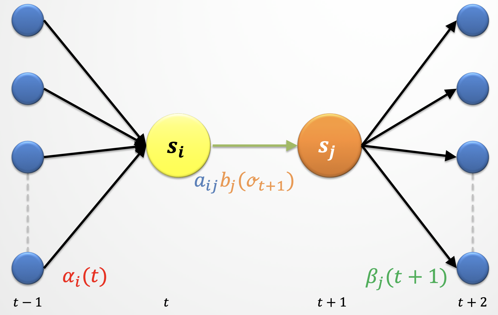
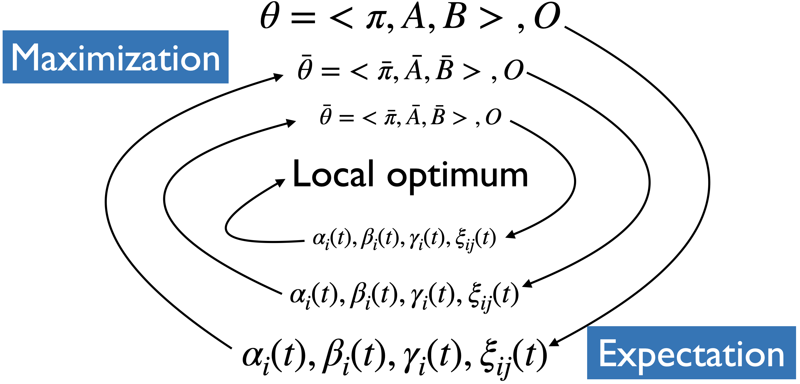

Baum-Welch (BW) algorithm#
Can we use MLE?#
If the training data contained state sequences, we could simply do maximum likelihood estimation, as we did in the last lecture.
But when we are only given observations, we cannot count the following:
How often \(q_{i-1}\) and \(q_i\) occur together normalized by how often \(q_{i-1}\) occurs: \(p(q_i|q_{i-1}) = \frac{Count(q_{i-1} q_i)}{Count(q_{i-1} \text{ANY STATE })}\)
How often \(q_i\) is associated with the observation \(o_i\).
\(p(o_i|q_{i}) = \frac{Count(o_i \text{ and } q_i)}{Count(q_{i})}\)
Solution: iterative unsupervised approach#
Iterative approach.
We guess the counts and iterate.
Unsupervised HMM training is done using a combination of the forward and the backward algorithms.
The idea is that we can combine \(\alpha\) and \(\beta\) at any point in time to represent the probability of an entire observation sequence.
What do we have so far?#
\(\alpha_i(t)\) gives us the probability of being in state \(i\) at time \(t\) knowing everything that came till time \(t\).
\(\beta_i(t)\) gives us the probability of being in state \(i\) at time \(t\) knowing what’s going to come in the future.

Combing \(\alpha\) and \(\beta\)#
We define one more parameter \(\gamma_i(t)\), which is a fusion of the \(\alpha_i(t)\) and the \(\beta_i(t)\) parameters.
\(\gamma_i(t)\) tells us the probability of being in a state \(i\) at time \(t\) knowing everything that came till time step \(t\) and everything that’s coming in the future.
How to calculate \(\gamma_i(t)\)?#
What’s the probability of being in state \(i\) at time \(t\) and given the entire observation sequence \(O\)?
Note that this is different than just looking at \(\alpha\) or \(\beta\).
If you know what came before you might guess some state which is optimal given what you’ve seen so far, but if you also know what’s coming in the future, you might have to revise that guess because what’s coming in future might make the current most likely position not very likely in the global picture.
A new probability \(\xi_{ij}(t)\)#
We also need \(\xi_{ij}(t)\) for Baum-Welch.
We define a probability \(\xi_{ij}(t)\) of landing in state \(s_i\) at time \(t\) and transitioning to state \(s_j\) at time \(t+1\) regardless of the previous states and future states given the observations.

Let’s call it a bow-tie (🎀) picture.
Calculating \(\xi_{ij}(t)\)#
We define a new probability \(\xi_{ij}(t)\) as the probability of transitioning from state \(i\) at time \(t\) to state \(j\) at time \(t+1\) based on our current model, \(\theta_k\) and given the entire observation sequence \(O\).
Where are we so far?#
We have an existing model \(\theta=<\pi,A,B>\).
We have observations \(O\).
We have some tools: \(\alpha_i(t), \beta_i(t), \gamma_i(t), \xi_{ij}(t)\).
Goal: We want to modify the parameters of our model \(\theta = <\pi, T, B>\) so that \(P(O;\theta)\) is maximized for the training data \(O\).
How can we use these tools to improve our model?
Baum-Welch algorithm or forward-backward algorithm#
There is no known way to solve for a globally optimal solution.
We search for a locally optimal solution.
We use an algorithm called Baum-Welch, which is a special case of expectation-maximization algorithm.
An expectation–maximization (EM) algorithm is an iterative method to find (local) maximum likelihood of parameters, where the model depends on unobserved latent variables.
With this algorithm we estimate the values for the hidden parameters of the model.
Expectation maximization#
We will start with a randomly initialized model.
We use the model to calculate new \(\alpha_i(t), \beta_i(t), \gamma_i(t), \xi_{ij}(t)\).
We update the model.
We can do this iteratively until convergence or stopping condition.

Given a model, we know how to calculate \(\alpha_i(t), \beta_i(t), \gamma_i(t), \xi_{ij}(t)\)
How to update the model?#
What’s the probability of ever being in state \(i\) regardless of the time?
\(\gamma_i(t)\) is the probability of being in state \(i\) at time \(t\)
If we sum over all \(t\) then we have a number that can be treated as the expected number of times \(i\) is ever visited.
What’s the probability of ever transitioning from state \(i\) to state \(j\)?
\(\xi_{ij}(t)\) is the probability of transitioning from \(i\) at \(t\) to \(j\) at \(t+1\)
If we sum over all \(t\) then we have a number which can be treated as the expected number of times \(i\) ever transitions to \(j\).
Updating \(\pi\)#
For each state \(i\)
\(\bar{\pi_i} = \gamma_i(0)\) = expected frequency in state \(i\) at time 0.
Updating transition probabilities \(A\)#
Updating observation probabilities \(B\)#
Expectation maximization#
We now have our updated parameters \(\bar{\theta}\)
We can use these updated parameters to calculate new \(\alpha_i(t), \beta_i(t), \gamma_i(t), \xi_{ij}(t)\).
We can do this iteratively until convergence or stopping condition.
Expectation and maximization#
If we knew \(\theta\), we could make expectations such as
Expected number of times we are in state \(s_i\)
Expected number of transitions \(s_i \rightarrow s_j\)
If we knew
Expected number of times we are in state \(s_i\)
Expected number of transitions \(s_i \rightarrow s_j\) then we could computer the maximum likelihood estimate of \(\theta\) $\(\theta = <\pi_i, {a_{ij}}, {b_i(o)}>\)$
Expectation-maximization#
Expectation maximization (EM) is an iterative algorithm that alternates between two steps: expectation (E-step) and maximization (M-step).
Guesses the expected counts for the hidden sequence using the current model \(\theta_k\) in the \(k^{th}\) iteration.
Computes a new \(\theta_{k+1}\) that maximizes the likelihood of the data given the guesses in the E-step, which is used in the next E-step of \(k+1^{th}\) iteration.
Continue until convergence or stopping condition.
EM algorithm for HMM learning#
Initialize \(A\) and \(B\)
Iterate until convergence
E-step $\(\gamma_i(t) = \frac{\alpha_i(t) \beta_i(t)}{P(O;\theta)} \forall t \text{ and } i\)\( \)\(\xi_{ij}(t) = \frac{\alpha_i(t)a_{ij}b_j(o_{t+1})\beta_j(t+1)}{P(O;\theta)} \forall t, i, \text{ and } j\)$
M-Step $\(\bar{\pi_i} = \gamma_i(0), i=1 \dots N\)\( \)\(\bar{a}_{ij} = \frac{\sum_{t=1}^{T-1} \xi_{ij}(t)}{\sum_{t=0}^{T-1}\gamma_i(t)}, i,j=1 \dots N\)\( \)\(\bar{b}_j(o) = \frac{\sum_{t=1\text{ st }O_t = o}^T \gamma_j(t)}{\sum_{t=1}^{T}\gamma_j(t)}, i=1 \dots N, o \in O\)$
Return \(A\) and \(B\)
Update parameters \(\theta_{k+1}\) after each iteration.
Rinse and repeat until \(\theta_{k} \approx \theta_{k+1}\).
This algorithm does not estimate the number of states, which must be known beforehand.
Moreover, in practice, some constraints on the topology and initial state probability are imposed at the beginning to assist training.
A note on the EM algorithm#
Here, we are looking at EM in the context of hidden Markov models.
But EM algorithm is a general iterative method to find local MLE estimates of parameters when little or no labeled training data is available.
We can view K-Means clustering as a special case of expectation maximization.